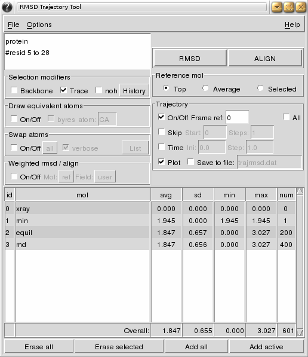

VMD plugins at WMC Physiology & Biophysics
RMSDTT: RMSD Trajectory Tool
Description | Manual | Download | Installation | Author
News 
- 5 Aug '10. New version 3.0 available (also included in next VMD release 1.8.8).
Description
The RMSDTT plugin original goal was to add support for rmsd calculations and alignment of trajectories to the RMSD Tool plugin. It has since evolved to:
- Calculate rmsd in trajectories, skip frames and do an all-to-all rmsd (all molecules/frames against each other).
- Calculate weighted rmsd.
- Align frames in trajectories.
- Plot results via the Multiplot VMD plugin (in all systems), Xmgrace (on unix systems) or MS Excel (on windows).
- Save results to file.
- Swap equivalent atoms (i.e. Glu OE1 and OE2) to reduce rmsd (if Swap plugin is available).
- Generate basic statistics (average, standard deviation, minima and maxima).
- Multi-line atoms selection with support for comments.
- Highlight equivalent atoms of the rmsd selection.
The RMSDTT plugin is distributed as part of VMD (RMSDTT 3.0 since version 1.8.8, RMSDTT 2.0 since version 1.8.4). Most recent information can be found at:
http://physiology.med.cornell.edu/faculty/hweinstein/vmdplugins/rmsdtt/
As an example, the following figure shows the use of RMSDTT to calculate the rmsd of a single frame structure (min) and two trajectories (equil and md) with the xray structure as reference (top molecule). The trace (CA atoms) of the whole protein is used for the calculation. Note how lines can be commented in the atom selection box. Statistics for each molecule/trajectory and totals are shown in the table. In addition a plot was requested (plot not shown).

Manual
RMSDTT has been enhanced quite a bit since it was first introduced back in 2004. Here is a short manual including all new options.
- Menu
- File: Rmsd values are usually plotted or saved to file during the calculation using the plot and save to file options in the main window. Both options can also be triggered using Save data and Plot data from this menu. However, all trajectory options in the main window, except for Time, will not take effect when using Save data and Plot data from this menu, because the data is precalculated. Save summary will save to file a summary of the data as it appears in the table.
- The Options menu allows you to change the definition of the backbone, select different programs for plotting, switch on/off the statistics in the table, and color the table by molecule number (only if this switch in on and the plot option is on during the calculation).
- Atoms Selection
The selection can be split in different lines. The character '#' can be used to comment out a portion of the selection from the '#' to the end of the line (see figure above).- Trace will add 'and name CA' to the atoms selection.
- Backbone will add 'and name C CA N' (default) or 'and name C CA N O' to the atoms selection. The backbone definition can be selected from menu (Options | Backbone def...).
- noh will exclude hydrogens from the atoms selection (adds 'and noh' to the atoms selection).
- History is a drop down menu of previously used selections. It is updated only upon successful completion of RMSD or ALIGN calculations.
- Equivalent Atoms
This option draws yellow discontinued lines between pair of equivalent atoms.- byres highlights only one atom per residue.
- atom specifies the atom name when using option byres If the atom is not found the first atom in the residue is used.
- Swap Atoms
This option tries to swap equivalent atoms to reduce the rmsd. Sets of equivalent atoms can be selected from the drop down menu (defaults to All defined pairs). How to define or delete new pairs is explained in the Swap plugin webpage. You need to have the Swap plugin installed to see these options. It does not work with ALIGN.- verbose will print the out the status of the swapped atoms during the RMSD calculations to the console.
- List will print out the current definitions to the console.
- Weights
Calculated a weighted rmsd or alignment using weights for each atom in the selection. Weight can be taken from different fields stored in one of the molecules:- Mol Select the molecule storing the weights. Ref is the current molecule selected as reference (see below).
- Field Select the field storing the weights. Five fields can be used: user, mass, charge, beta, occupancy. Some are filled by VMD when loading the molecule, while others can be inputed using tcl.
- Calculation Type
- RMSD will calculate the rmsd using the reference molecule defined in Reference Mol and the structures in the table as targets. Note that the RMSD button has to be pressed again to obtain the new rmsd values after alignment.
- ALIGN will align the structures in the table using the molecule defined in Reference Mol as reference. ALIGN is not available if the All in the trajectory options is active, Average is used as reference or Swap atoms is active.
- Reference Molecule
Selects the molecule to use as reference for all rmsd and alignment calculations.- Top uses the actual top molecule as reference (it doesn't need to be one included in the table).
- Average uses the average structure calculated from all the molecules in the table (and all frames if trajectory is activated) as reference. It does not work for ALIGN calculations.
- Selected uses the molecule selected in the table as reference. If more than one molecule is selected, only the first one will be used as reference.
- Trajectory Options
Include frames from trajectories of one or more molecules in the rmsd or alignment calculation.- Frame ref sets the frame of reference for the reference molecule. if the reference molecule is set to Average, all frames are used.
- All activates the calculation of the rmsd of all frames in the selected structures against all frames in the reference molecule.
- Skip allows to skip frames, starting from Start and skipping every Steps.
- Time activates the use of time units. Start is the initial time, and Step is the time between frames. This changes will be reflected in the plot and the output file.
- Plot uses the Multiplot VMD plugin (available in all systems), Xmgrace (only on unix) or MS Excel (only windows) to plot the data rmsd vs frame/time during the calculation. This options is not available if the All option is on. The same plot can be obtained from the File menu after the calculation has finished(see above). Xmgrace or MS Excel have to be installed on the system by the user. MS Excel needs the tcom tcl library (see installation instructions). VMD gives a warning message when exiting on windows systems if MS Excel is open with data from VMD, but you still can continue using MS Excel.
- Save saves the data to the specified file during the calculation. Data can also be saved after the calculation has finished from the File menu (see above). The format of the data depends on the status of the All option. If it is off, the format is a table in which each row represents a frame and each column represents a molecule or trajectory. If All is on, the data is a table in which each row represents the rmsd between the corresponding ref_mol/ref_frame and target_mol/target_frame pairs. If the trajectories have differing numbers of frames, NA (not available) is used. The data can also be saved from the File menu.
All off All on frame mol 1 mol 2 mol 3 0 0.652 2.828 0.652 1 NA NA 0.659 2 NA NA 0.674 3 NA NA 0.692 4 NA NA 0.722 5 NA NA 0.743 ... ... ... ...ref_mol ref_frame mol frame rmsd 0 0 1 0 0.652 0 0 2 0 2.828 0 0 3 0 0.652 0 0 3 1 0.659 0 0 3 2 0.674 0 0 3 3 0.692 ... ... ... ... ...
- Table of target molecules:
This table shows the results by molecule. It presents the average, standard deviation, minimum, maximum and number of frames used (note this number is different from the number of frames in the molecule when the reference molecule/frame is not included in the calculation). The Overall row shows the overall values as if all frames were independent of each other, i. e., it is not an average of the averages.
The following buttons can be used to add/remove molecules from the table (and further calculations):
- Erase all deletes all molecules from the list.
- Erase selected deletes the selected molecules from the list.
- Add all adds all molecules to the list.
- Add active adds only the active molecules to the list.
Download
Subscribe to the news feed or contact the author if you would like to be informed about new developments.| version 3.0 (5 Aug '10) | [download] |
Change log:
|
|
| version 2.01 (24 Apr '06) | [download] |
Change log:
|
|
| version 2.0 (3 Apr '06) | [download] |
Change log:
|
|
Previous versions can be found here
Installation
Many people seem to have problems installing these plugins. To help with this issue I have written a small guide on how to install third party VMD plugins in a central location without modifying the VMD installation.
The RMSDTT plugin v2.0 has been included in the VMD distribution since VMD 1.8.4, RMSDTT v3.0 since VMD 1.8.8. If you have a previous VMD version I recommend you upgrade. If you still need the RMSDTT plugin in a previous VMD version or if you want to update to a most recent version of the RMSDTT plugin, follow this instructions:
- Download the plugin from here to the directory where you store your VMD plugins.
- Add the following to your .vmdrc startup file (or create one) (for unix the path should be $HOME/.vmdrc, and for windows %USERPROFILE%\vmd.rc):
- For VMD 1.8.4 and up (will be used instead of the RMSDTT plugin version distributed with VMD 1.8.4):
set auto_path [linsert $auto_path 0 {/path/to/your/plugins/directory}] - For VMD 1.8.3
lappend auto_path {/path/to/your/plugins/directory} vmd_install_extension rmsdtt rmsdtt_tk_cb "WMC PhysBio/RMSDTT" - For VMD 1.8.2 and down
lappend auto_path {/path/to/your/plugins/directory} if { [catch "package require rmsdtt" msg] } { puts "VMD RMSDTT package could not be loaded:\n$msg" } elseif { [catch {menu tk register "rmsdtt" rmsdtt} msg] } { puts "VMD RMSDTT could not be started:\n$msg" }
Remember to use the correct path to your plugins directory; i.e, if you saved the plugin in /home/user/myplugins, write that same path in the auto_path line.
Note: If you created the .vmdrc file, remember to add menu main on to get the main menu back.
- For VMD 1.8.4 and up (will be used instead of the RMSDTT plugin version distributed with VMD 1.8.4):
- To be able to use MS Excel on Windows you will need the tcom tcl library. Download the library and install it (i.e. in your plugins directories) (in general, only the tcom/lib/tcom directory is needed). Then add the following to your vmd.rc file:
lappend auto_path {/path/to/tcom/lib/tcom} if { [catch "package require tcom" msg] } { puts "VMD tcom package could not be loaded:\n$msg" } - Start VMD. The RMSDTT plugin should be accessible from the Extensions menu.
Author
Luis Gracia, PhDWeill Cornell Medical College
1300 York Ave, New York, 10065 NY
Send comments and feedback to Luis Gracia.